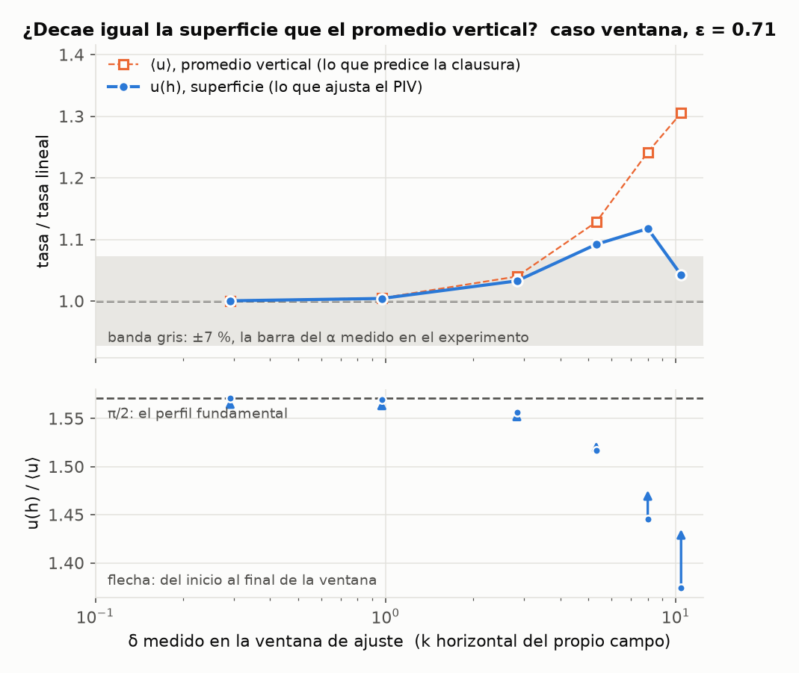
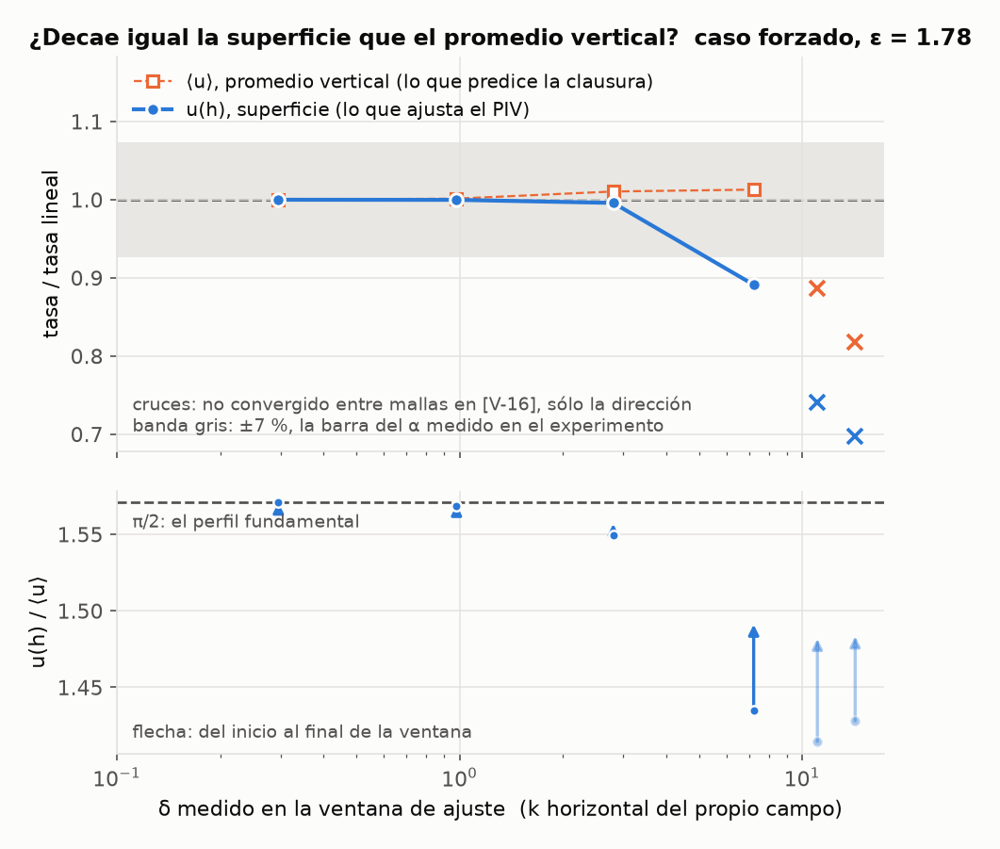

<title>Fricción con tope free-slip</title>
<link rel="stylesheet" href="https://fonts.googleapis.com/css2?family=Source+Serif+4:opsz,wght@8..60,400;8..60,600;8..60,700&family=IBM+Plex+Sans:wght@400;500;600&family=IBM+Plex+Mono:wght@400;600&display=swap">
<style>
:root {
  color-scheme: light;
  --ground:  #f6f7f8;
  --surface: #ffffff;
  --ink:     #12161a;
  --muted:   #5b6570;
  --rule:    #dde2e6;
  --accent:  #2a78d6;
  --accent-soft: #eaf1fb;
  --warn:    #b45309;
  --warn-soft: #fdf3e7;
  --ok: #1baf7a;
  --serie1:#2a78d6; --serie2:#eb6834; --serie3:#1baf7a; --serie4:#eda100;
}
@media (prefers-color-scheme: dark) {
  :root:not([data-theme="light"]) {
    color-scheme: dark;
    --ground:  #14171a;
    --surface: #1b1f23;
    --ink:     #eef1f4;
    --muted:   #a3adb7;
    --rule:    #2b3137;
    --accent:  #3987e5;
    --accent-soft: #17263a;
    --warn:    #d9922b;
    --warn-soft: #2a2013;
    --ok: #199e70;
    --serie1:#3987e5; --serie2:#d95926; --serie3:#199e70; --serie4:#c98500;
  }
}
:root[data-theme="dark"] {
  color-scheme: dark;
  --ground:  #14171a;
  --surface: #1b1f23;
  --ink:     #eef1f4;
  --muted:   #a3adb7;
  --rule:    #2b3137;
  --accent:  #3987e5;
  --accent-soft: #17263a;
  --warn:    #d9922b;
  --warn-soft: #2a2013;
  --ok: #199e70;
  --serie1:#3987e5; --serie2:#d95926; --serie3:#199e70; --serie4:#c98500;
}

body { background: var(--ground); color: var(--ink);
       font-family: "Source Serif 4", Georgia, serif; font-size: 17px;
       line-height: 1.62; margin: 0; }
.hoja { max-width: 62rem; margin: 0 auto; padding: 3.2rem 1.5rem 6rem;
        display: flex; flex-direction: column; gap: 1.1rem; }
.hoja > * { margin: 0; }

.eyebrow { font-family: "IBM Plex Sans", system-ui, sans-serif; font-size: .74rem;
           letter-spacing: .13em; text-transform: uppercase; color: var(--muted); }
h1 { font-size: clamp(1.9rem, 4.4vw, 2.6rem); line-height: 1.16; font-weight: 600;
     text-wrap: balance; letter-spacing: -.015em; }
h2 { font-family: "IBM Plex Sans", system-ui, sans-serif; font-size: 1.2rem;
     font-weight: 600; margin-top: 2.6rem; text-wrap: balance;
     padding-bottom: .45rem; border-bottom: 1px solid var(--rule);
     scroll-margin-top: 1.2rem; display: flex; align-items: baseline; gap: .6rem; }
h2 .n { font-family: "IBM Plex Mono", monospace; font-size: .82rem; color: var(--muted);
        font-weight: 400; }
h3 { font-family: "IBM Plex Sans", system-ui, sans-serif; font-size: .98rem;
     font-weight: 600; margin-top: 1.3rem; }
p, li { max-width: 42rem; }
.hoja > p, .hoja > ul, .hoja > ol { color: var(--ink); }
a { color: var(--accent); }
code, .num td, .num th { font-family: "IBM Plex Mono", ui-monospace, monospace; }
code { font-size: .88em; background: var(--accent-soft); padding: .08em .32em;
       border-radius: 3px; }
b, strong { font-weight: 600; }
.nota { color: var(--muted); font-size: .93rem; }

.veredicto { background: var(--surface); border: 1px solid var(--rule);
             border-left: 3px solid var(--accent);
             padding: 1.3rem 1.5rem; display: flex; flex-direction: column;
             gap: .9rem; }
.cifras { display: grid; grid-template-columns: repeat(auto-fit, minmax(11rem, 1fr));
          gap: 1.4rem 2rem; }
.cifra { display: flex; flex-direction: column; gap: .15rem; }
.cifra .v { font-family: "IBM Plex Mono", monospace; font-size: 1.4rem;
            font-weight: 600; font-variant-numeric: tabular-nums; }
.cifra .k { font-family: "IBM Plex Sans", sans-serif; font-size: .76rem;
            letter-spacing: .04em; text-transform: uppercase; color: var(--muted); }
.cifra.destacada .v { color: var(--accent); }

nav.indice { background: var(--surface); border: 1px solid var(--rule);
             padding: 1rem 1.3rem; font-family: "IBM Plex Sans", sans-serif;
             font-size: .88rem; }
nav.indice p { font-size: .74rem; letter-spacing: .07em; text-transform: uppercase;
               color: var(--muted); margin: 0 0 .6rem; max-width: none; }
nav.indice ol { margin: 0; padding-left: 1.2rem; columns: 2; column-gap: 2rem; }
nav.indice li { margin-bottom: .35rem; break-inside: avoid; }
nav.indice a { text-decoration: none; color: var(--ink); }
nav.indice a:hover { color: var(--accent); }
@media (max-width: 32rem) { nav.indice ol { columns: 1; } }

figure { background: var(--surface); border: 1px solid var(--rule);
         padding: 1rem 1rem .35rem; display: flex; flex-direction: column;
         gap: .55rem; margin: .3rem 0; }
figure img { display: block; width: 100%; height: auto; max-width: 100%; }
figcaption { font-family: "IBM Plex Sans", sans-serif; font-size: .85rem;
             color: var(--muted); line-height: 1.5; padding-bottom: .6rem;
             max-width: 46rem; }
figcaption b { color: var(--ink); }
img.oscura { display: none; }
@media (prefers-color-scheme: dark) {
  :root:not([data-theme="light"]) img.clara { display: none; }
  :root:not([data-theme="light"]) img.oscura { display: block; }
}
:root[data-theme="dark"] img.clara { display: none; }
:root[data-theme="dark"] img.oscura { display: block; }

.scroll { overflow-x: auto; border: 1px solid var(--rule); background: var(--surface); }
table { border-collapse: collapse; width: 100%; font-size: .86rem; }
th, td { padding: .45rem .75rem; text-align: right; white-space: nowrap;
         border-bottom: 1px solid var(--rule); }
th:first-child, td:first-child { text-align: left; white-space: normal; }
thead th { font-family: "IBM Plex Sans", sans-serif; font-weight: 600;
           font-size: .74rem; letter-spacing: .04em; text-transform: uppercase;
           color: var(--muted); }
tbody tr:last-child td { border-bottom: none; }
.num td { font-variant-numeric: tabular-nums; }
tr.hecha td:first-child::before { content: "● "; color: var(--ok); }
tr.curso td:first-child::before { content: "◐ "; color: var(--accent); }

.grid2 { display: grid; grid-template-columns: repeat(auto-fit, minmax(15rem, 1fr));
         gap: 1rem; }
.tarjeta { background: var(--surface); border: 1px solid var(--rule);
           padding: 1rem 1.2rem; font-family: "IBM Plex Sans", sans-serif;
           font-size: .86rem; }
.tarjeta h4 { margin: 0 0 .3rem; font-size: .74rem; letter-spacing: .05em;
              text-transform: uppercase; color: var(--muted); font-weight: 600; }
.tarjeta .val { font-family: "IBM Plex Mono", monospace; font-size: 1.05rem;
                color: var(--ink); }
.tarjeta p { font-family: "Source Serif 4", serif; font-size: .95rem; margin-top: .3rem; }

.salvedad { background: var(--warn-soft); border: 1px solid var(--rule);
            border-left: 3px solid var(--warn); padding: .9rem 1.2rem;
            font-size: .93rem; }
.salvedad b { color: var(--warn); }
ul.pendientes li, ul.salvedades li { margin-bottom: .6rem; }

.etiqueta { font-family: "IBM Plex Mono", monospace; font-size: .78rem;
            color: var(--muted); }

.pie { color: var(--muted); font-size: .85rem;
       font-family: "IBM Plex Sans", sans-serif; border-top: 1px solid var(--rule);
       padding-top: 1rem; margin-top: 2.4rem; max-width: none; }
.pie a { color: var(--muted); }
</style>

<main class="hoja">

<p class="eyebrow">Ondas Gravitacionales e Investigación Asistida por IA · Entrega · 2026-09-17</p>
<h1>¿Cuánto frena una capa delgada de fluido el fondo sobre el que fluye?</h1>
<p class="nota">Lectura de corrido de lo que el proyecto <b>estableció y verificó</b>. Cada
número apunta a lo que lo produce en el repositorio
(<a href="https://github.com/Lucia-Maz/free-slip-boundary-conditions-fourier-continuation">github.com/Lucia-Maz/free-slip-boundary-conditions-fourier-continuation</a>):
un chequeo ejecutable, un script con su JSON, y la entrada del log donde está discutido
—las etiquetas <code>[V-nn]</code>, <code>[D-nn]</code>, <code>[H-nn]</code>, <code>[P-nn]</code>
resuelven en <code>DECISIONES.md</code>. La página tiene tres zonas: lo numérico, que es
el objeto del proyecto; el contraste con un experimento; y lo que quedó abierto explorando.</p>

<div class="veredicto">
  <div class="cifras">
    <div class="cifra destacada"><span class="v">νπ² / 4h²</span>
      <span class="k">fricción de fondo · superficie libre</span></div>
    <div class="cifra"><span class="v">× 4</span>
      <span class="k">exacto, contra tapa rígida</span></div>
    <div class="cifra"><span class="v">6,8·10⁻¹⁰</span>
      <span class="k">error de SPECTER vs. referencia</span></div>
    <div class="cifra"><span class="v">+3 a +12 %</span>
      <span class="k">tasa que ve un PIV vs. lineal, δ ≤ 10</span></div>
  </div>
  <p style="max-width:46rem">La fricción de fondo de una capa delgada con fondo
  no-deslizante y superficie libre <b>se puede calcular</b> en vez de ajustar: es
  α&nbsp;=&nbsp;νπ²/4h², exactamente cuatro veces menor que la de una tapa rígida, y
  SPECTER con la condición free-slip implementada en este proyecto la reproduce con error
  de 10⁻¹⁰. Con el mismo código se midió qué le hace la no linealidad: <b>sube la fricción
  de fondo</b> hasta un 26&nbsp;% en δ&nbsp;=&nbsp;10, pero la velocidad de superficie —lo
  que un PIV ajusta— decae más lento que el promedio vertical, y las dos cosas casi se
  cancelan: en el régimen de la ventana experimental la predicción lineal queda buena
  al 12&nbsp;%.</p>
  <p style="max-width:46rem" class="nota">Contraste: el decaimiento medido por PIV da
  α&nbsp;=&nbsp;0,0669&nbsp;±&nbsp;0,0049&nbsp;s⁻¹ contra 0,0685 calculado y 0,274 de tapa
  rígida —free-slip, no tapa rígida—, con una salvedad cuantitativa abierta que está
  escrita al lado del número (§5, [P-02]).</p>
</div>

<nav class="indice">
  <p>En esta página</p>
  <ol>
    <li><a href="#pregunta">1 · La pregunta y por qué importa</a></li>
    <li><a href="#superficie">2 · Superficie libre: qué se implementó y por qué vale</a></li>
    <li><a href="#establecido">3 · Lo establecido, verificado</a></li>
    <li><a href="#fisica">4 · Qué hace la no linealidad</a></li>
    <li><a href="#contraste">5 · Contraste con el experimento</a></li>
    <li><a href="#explorando">6 · Explorando</a></li>
    <li><a href="#salvedades">7 · Salvedades vigentes</a></li>
    <li><a href="#sigue">8 · Qué sigue</a></li>
  </ol>
</nav>

<h2 id="pregunta"><span class="n">1</span>La pregunta y por qué importa</h2>
<p>En las simulaciones de turbulencia cuasi-2D que usa el grupo, el decaimiento de una
capa delgada de fluido está dominado por la fricción con el fondo. Esa fricción nace de
la <b>asimetría</b> entre el fondo, no-deslizante, y la superficie de arriba, que en el
experimento es libre (el electrolito está en contacto con aire). Los códigos existentes
o no tienen bordes verticales, o los tienen no-deslizantes de los dos lados — así que
la fricción entra como un término −α<b>u</b> con un α <b>ajustado</b>, no calculado.</p>
<p>Este proyecto implementa en <b>SPECTER</b> —el solver pseudoespectral con
continuación de Fourier del grupo, no periódico en z— la condición de superficie libre
en la cara superior, la verifica contra una referencia independiente, y la usa para
calcular α y para medir qué le hace la no linealidad. Como contraste, compara el
resultado con el decaimiento medido por PIV en la celda de forzado electromagnético.</p>
<div class="scroll">
<table class="num">
<thead><tr><th>fase</th><th>qué es</th><th>estado</th></tr></thead>
<tbody>
<tr class="hecha"><td>0 · SPECTER</td><td>Conseguir el solver y leer en la fuente cómo impone las condiciones de contorno</td><td>hecha</td></tr>
<tr class="hecha"><td>1 · Teoría</td><td>Derivación analítica y solver de referencia no espectral</td><td>hecha</td></tr>
<tr class="hecha"><td>2 · Implementación</td><td>La condición free-slip en Fortran, dentro de SPECTER: 237 líneas en 5 archivos más un test</td><td>hecha</td></tr>
<tr class="hecha"><td>3 · Verificación</td><td>Seis casos de aceptación fijados por hash, incluido uno que falla a propósito</td><td>hecha — 6/6</td></tr>
<tr class="curso"><td>4 · Física y entrega</td><td>Barrido en δ (hecho), contraste con el experimento (hecho), corrida de producción, PDF</td><td>en curso</td></tr>
</tbody>
</table>
</div>

<h2 id="superficie"><span class="n">2</span>Superficie libre: qué se implementó y por qué vale</h2>
<p>Una superficie libre real impone dos cosas sobre el fluido. Que el aire no lo arrastra:
<b>tensión tangencial nula</b>. Y que la superficie se mueve con el fluido y se restituye
por gravedad y capilaridad: la condición cinemática w(h)&nbsp;=&nbsp;∂η/∂t junto con el
balance de tensión normal, que fija la presión en la superficie. Si la deformación η es
chica frente al espesor, la segunda se reduce a <b>w&nbsp;=&nbsp;0 sobre un plano fijo</b>,
y lo que queda es una cara plana sin tensión tangencial. Eso es la condición
<b>free-slip</b>, así la llama el propio código (<code>freeslip</code>,
<code>freeslip_z</code>), y es lo que este proyecto implementó: <b>una superficie libre no
deformable</b>, el orden cero de la superficie libre en el número de Froude.</p>

<h3>2.1 · Por qué vale para esta pregunta</h3>
<p>La deformación de una superficie libre es del orden de la presión dinámica del flujo
dividida por lo que la restituye: η&nbsp;~&nbsp;ρU²/(ρg&nbsp;+&nbsp;σk²). Con los
parámetros de la celda (<code>codigo/celda.py</code>) ese cociente es un número, no un
criterio:</p>
<div class="scroll">
<table class="num">
<thead><tr><th>régimen</th><th>U (promedio vertical)</th><th>Froude</th><th>η</th><th>η / h</th></tr></thead>
<tbody>
<tr><td>forzado 2,15 A</td><td>0,84 mm/s</td><td>0,0035</td><td>0,044 µm</td><td>7,3·10⁻⁶</td></tr>
<tr><td>inicio del decaimiento</td><td>2,31 mm/s</td><td>0,0095</td><td>0,33 µm</td><td>5,5·10⁻⁵</td></tr>
</tbody>
</table>
</div>
<p>La superficie se deforma <b>menos de medio micrón sobre 6&nbsp;mm</b>. Restituye la
gravedad —la longitud capilar es 2,7&nbsp;mm, k&nbsp;=&nbsp;369&nbsp;m⁻¹, por encima del
k&nbsp;=&nbsp;296 del forzado— y el resultado no depende de usar ρ y σ del agua limpia:
ninguna corrección del electrolito mueve cuatro órdenes de magnitud. Como α sale del
cizallamiento del perfil vertical en el fondo, la corrección por deformación a α es de
ese mismo orden, una parte en 10⁵; cualquier otra incerteza del problema —medio milímetro en h mueve
α un 17&nbsp;%— es diez mil veces mayor. <b>Para calcular la fricción de fondo de esta
capa, la superficie libre no deformable es la condición correcta</b>, y lo que queda de
la física de la superficie libre —la asimetría con el fondo, que es lo que produce el
factor 4— está entera.</p>
<p>Hay además una razón numérica para que esta condición sea la primera que se
implementa: con la superficie plana, la tensión tangencial ∂u/∂z&nbsp;+&nbsp;∂w/∂x
coincide con la vorticidad tangencial ∂u/∂z&nbsp;−&nbsp;∂w/∂x, y como la proyección de
presión de SPECTER resta un gradiente, la condición impuesta sobre la vorticidad se
conserva <b>sin error de partición</b>: el residuo de tensión en la cara es 6·10⁻¹² e
independiente de dt ([D-24], verificado en la puerta). Esa coincidencia es exclusiva del
caso plano.</p>

<h3>2.2 · La superficie deformable, para más adelante</h3>
<p>Es la continuación natural de este trabajo, y ya está preparada, no descartada. Las
condiciones linealizadas están derivadas (cinemática w(h)&nbsp;=&nbsp;∂η/∂t, tensión
tangencial completa, tensión normal que <b>prescribe p</b> en la superficie;
<code>teoria/superficie_libre_v_estrella_y_p.md</code>&nbsp;§4), y la rama de presión que
hace falta —Neumann abajo, Dirichlet arriba, el par opuesto al que usa el caso plano—
está derivada y verificada en Python sobre 20&nbsp;000 combinaciones de k y Lz, con su
criterio de condicionamiento ([V-12]). Lo que falta, dicho sin adornos:</p>
<ul>
  <li>esa rama en Fortran dentro de <code>laplace_z</code>, y un objetivo de contorno por
  cara en <code>sol_project</code>, que hoy tiene uno solo para las dos;</li>
  <li>la condición sobre el campo auxiliar v* queda <b>acoplada implícitamente</b> a
  ∂p/∂z en la superficie, que ya no es un dato sino parte de la solución: hay que iterar
  dentro de cada subpaso, o aceptar un error de partición O(dt);</li>
  <li>el campo η(x,&nbsp;y,&nbsp;t), periódico, avanzado con el mismo Runge-Kutta;</li>
  <li>y una puerta de aceptación nueva, porque la propiedad que hace exacto al caso plano
  no sobrevive: la natural es la relación de dispersión de ondas gravito-capilares
  amortiguadas, con el signo del término capilar fijado por test y no de memoria.</li>
</ul>
<p>Es un cambio de estructura del paso de proyección, no una condición de contorno
más, y por eso queda para después de esta entrega. En esta celda no cambiaría α; se
vuelve necesaria cuando el número de Froude deja de ser chico —capas más gruesas, flujos
más rápidos— o cuando la pregunta es sobre las ondas de la superficie misma.</p>

<h2 id="establecido"><span class="n">3</span>Lo establecido, verificado</h2>
<p>Con fondo no-deslizante y superficie libre el espectro de decaimiento vertical es
λₘ&nbsp;=&nbsp;ν((m+½)π/h)², contra λₙ&nbsp;=&nbsp;ν(nπ/h)² con no-deslizamiento en las
dos caras. El modo fundamental de cada uno da la fricción de fondo:</p>
<div class="grid2">
  <div class="tarjeta"><h4>Fricción · superficie libre</h4>
    <div class="val">α = νπ² / (4h²)</div></div>
  <div class="tarjeta"><h4>Fricción · tapa rígida (no-slip/no-slip)</h4>
    <div class="val">α = νπ² / h²</div></div>
  <div class="tarjeta"><h4>Cociente entre ambas</h4>
    <div class="val">exactamente 4</div>
    <p>Por tres rutas independientes. Es el número que un código con tapa rígida pone
    mal, y el que un α ajustado esconde.</p></div>
  <div class="tarjeta"><h4>Sesgo del PIV de superficie</h4>
    <div class="val">u(h) / ⟨u⟩ = π/2</div>
    <p>Las partículas trazadoras flotan: miden la velocidad de superficie, un 57&nbsp;%
    por encima del promedio vertical del modo fundamental.</p></div>
</div>
<p style="margin-top:1rem">La derivación la produjo un equipo de agentes con un
verificador independiente y un solver de referencia no espectral
(<code>jobs/…/out/build/notes.pdf</code>, <code>out/capa.py</code>). La puerta de
aceptación de esa fase, y la de la implementación, se escribieron <b>antes</b> del
trabajo, arrancaron en rojo, están fijadas por hash y <b>no contienen la fórmula del
resultado</b>: construyen su propia referencia por diferencias finitas con extrapolación
de Richardson, para que el resultado quede comprobado y no afirmado.</p>
<p>SPECTER modificado reproduce estos números contra esa referencia, en una malla
8×8×128 (ν&nbsp;=&nbsp;10⁻², Lz&nbsp;=&nbsp;1):</p>
<div class="scroll">
<table class="num">
<thead><tr><th>cantidad</th><th>SPECTER</th><th>referencia</th><th>error relativo</th></tr></thead>
<tbody>
<tr><td>λ₀ (m=0, el fundamental)</td><td>2,467401099·10⁻²</td><td>2,467401100·10⁻²</td><td>6,8·10⁻¹⁰</td></tr>
<tr><td>λ₁ (m=1, primer armónico vertical)</td><td>2,220660867·10⁻¹</td><td>2,220660990·10⁻¹</td><td>5,5·10⁻⁸</td></tr>
<tr><td>λ₂ (m=2, segundo armónico vertical)</td><td>6,168500038·10⁻¹</td><td>6,168502750·10⁻¹</td><td>4,4·10⁻⁷</td></tr>
<tr><td>λ(tapa rígida) / λ(superficie libre)</td><td>4,000000015</td><td>4</td><td>3,8·10⁻⁹</td></tr>
<tr><td>cara libre abajo en vez de arriba</td><td colspan="2">misma λ dentro de 7,7·10⁻¹³</td><td>—</td></tr>
<tr><td>residuo de tensión en la cara libre</td><td colspan="2">6,1·10⁻¹² relativo a la cara rígida, independiente de dt</td><td>—</td></tr>
<tr><td>1, 2 y 4 procesos MPI</td><td colspan="2">coinciden en 15 cifras</td><td>—</td></tr>
</tbody>
</table>
</div>
<p class="nota">Procedencia: <code>verificacion/test_aceptacion_fase1.py</code> y
<code>test_aceptacion_fase2.py</code> (compila SPECTER y corre 15 simulaciones, 6/6);
[V-07], [V-09], [V-10]. El parche contra upstream, 237 líneas agregadas y 22 borradas,
está en <code>numerico/specter-parche/</code> con la receta para reconstruir el árbol.</p>

<h2 id="fisica"><span class="n">4</span>Qué hace la no linealidad</h2>
<p>La fórmula de α vale para el modo vertical fundamental. Promediando Navier–Stokes
en la vertical sin ninguna clausura aparece el parámetro que gobierna cuánto se aparta
el flujo real de ese modo:</p>
<div class="tarjeta" style="max-width:28rem">
  <h4>Parámetro que gobierna la clausura</h4>
  <div class="val">δ = U·k·h² / ν = Re_h · ε</div>
  <p>con ε&nbsp;=&nbsp;k·h el espesor relativo a la escala horizontal del flujo.</p>
</div>
<p style="margin-top:1rem">En el experimento δ es grande —≈&nbsp;9 en el estado forzado
y ≈&nbsp;27 al inicio del decaimiento, con k&nbsp;=&nbsp;296&nbsp;m⁻¹ el fundamental de
la red de imanes— pero la distorsión del perfil vertical tiene un prefactor chico
(≈&nbsp;0,0077&nbsp;δ): ≈&nbsp;7&nbsp;% y ≈&nbsp;21&nbsp;%. Eso era una estimación de
orden ([V-11]); con SPECTER se midió.</p>

<h3>4.1 · La fricción de fondo sube</h3>
<p>Con SPECTER ya modificado se integró el decaimiento libre de un campo celular
tridimensional a amplitud creciente, en los dos ε&nbsp;=&nbsp;kh del experimento —0,71
para la ventana del ajuste y 1,78 para el fundamental de la red— a dos resoluciones
horizontales, 16×16 y 32×32, con la referencia lineal medida con el mismo binario a
amplitud minúscula. Dos medidas independientes: la tasa de decaimiento de ⟨v²⟩ contra la
lineal, y la fricción de fondo <b>sin clausura</b>,
α_eff&nbsp;=&nbsp;ν⟨∂_z u|₀·Ū⟩/(h⟨Ū²⟩), leída del campo en la ventana de ajuste y
dividida por νπ²/4h².</p>
<div class="scroll">
<table class="num">
<thead><tr><th>δ en la ventana</th><th>ε = 0,71 · λ/λ_lin</th><th>ε = 0,71 · α_eff/α</th><th>ε = 1,78 · λ/λ_lin</th><th>ε = 1,78 · α_eff/α</th></tr></thead>
<tbody>
<tr><td>0,3</td><td>1,000</td><td>1,001</td><td>1,000</td><td>1,001</td></tr>
<tr><td>1</td><td>1,005</td><td>1,004</td><td>1,002</td><td>1,004</td></tr>
<tr><td>3</td><td>1,044</td><td>1,025</td><td>1,014</td><td>1,028</td></tr>
<tr><td>5 – 7</td><td>1,143</td><td>1,083</td><td>1,007</td><td>1,155</td></tr>
<tr><td>8 – 10</td><td>1,27 – 1,31</td><td>1,18 – 1,28</td><td colspan="2">no convergido entre mallas</td></tr>
</tbody>
</table>
</div>
<figure>
  
  <figcaption><b>Caso ventana, ε&nbsp;=&nbsp;0,71.</b> Círculos: tasa medida sobre la
  lineal; cuadrados: α_eff/α del campo. Las dos mallas coinciden dentro de 1,2&nbsp;%
  hasta δ&nbsp;=&nbsp;10. La banda gris es la barra del α medido en el experimento.</figcaption>
</figure>
<figure>
  
  <figcaption><b>Caso forzado, ε&nbsp;=&nbsp;1,78.</b> Hasta δ&nbsp;≈&nbsp;7 las mallas
  coinciden; la fricción de fondo sube un 15&nbsp;% mientras la tasa total queda dentro
  de 1,4&nbsp;% de la lineal, porque el término no lineal manda energía a escalas más
  grandes, que disipan menos horizontalmente. Los dos puntos de más amplitud no convergen
  entre mallas y no se usan.</figcaption>
</figure>
<p><b>Conclusión:</b> el término no lineal <b>sube la fricción de fondo</b>: 2,5&nbsp;% en
δ&nbsp;=&nbsp;3, 8&nbsp;% en δ&nbsp;=&nbsp;5, 15–18&nbsp;% en δ&nbsp;≈&nbsp;7–8, hasta
26–28&nbsp;% en δ&nbsp;=&nbsp;10 — un factor ~3 por encima de la estimación de orden. El
perfil distorsionado tiene más cizallamiento en el fondo por unidad de velocidad media
que el fundamental. La clausura de un modo queda <b>cuantificada, no estimada</b>: vale al
por ciento para δ&nbsp;≲&nbsp;3 y hay que corregirla por encima.
Procedencia: <code>verificacion/barrido_delta_etapa1.py</code>,
<code>salidas/tablas/barrido_delta_etapa1_*.json</code>, informes con veredicto
automático en <code>informe/</code>; [D-42], [V-16].</p>

<h3>4.2 · Lo que ve un PIV de superficie</h3>
<p>Las partículas flotan: el PIV mide u(h), no el promedio vertical ⟨u⟩ que predice la
clausura. En el perfil fundamental u(h)/⟨u⟩&nbsp;=&nbsp;π/2 y las dos tasas coinciden.
Con el perfil distorsionado no: sobre las mismas corridas, escribiendo cinco campos
dentro de la ventana de ajuste, se midió la pendiente de log&nbsp;u(h) contra la de
log&nbsp;⟨u⟩, cada una dividida por la misma tasa en la referencia lineal.</p>
<div class="scroll">
<table class="num">
<thead><tr><th>δ</th><th>ε = 0,71 · λ_sup/λ_lin</th><th>ε = 0,71 · λ_prom/λ_lin</th><th>ε = 0,71 · u(h)/⟨u⟩</th><th>ε = 1,78 · λ_sup/λ_lin</th><th>ε = 1,78 · λ_prom/λ_lin</th><th>ε = 1,78 · u(h)/⟨u⟩</th></tr></thead>
<tbody>
<tr><td>1</td><td>1,004</td><td>1,005</td><td>1,57</td><td>1,000</td><td>1,001</td><td>1,57</td></tr>
<tr><td>3</td><td>1,033</td><td>1,040</td><td>1,56</td><td>0,996</td><td>1,011</td><td>1,55</td></tr>
<tr><td>5</td><td>1,092</td><td>1,128</td><td>1,52</td><td colspan="3">—</td></tr>
<tr><td>7 – 8</td><td>1,118</td><td>1,242</td><td>1,45</td><td><b>0,891</b></td><td>1,013</td><td>1,44</td></tr>
<tr><td>10</td><td>1,043</td><td>1,305</td><td>1,37</td><td colspan="3">no convergido entre mallas</td></tr>
</tbody>
</table>
</div>
<figure>
  
  <figcaption><b>Caso ventana, ε&nbsp;=&nbsp;0,71.</b> Arriba: la tasa del promedio
  vertical sube hasta 31&nbsp;% con δ, la de la superficie sólo hasta 12&nbsp;%, y nunca
  baja de la lineal. Abajo: el perfil distorsionado tiene menos exceso de superficie
  (u(h)/⟨u⟩ cae de π/2 a 1,37 en δ&nbsp;≈&nbsp;10) y, como δ decae en el tiempo, el
  cociente se recupera dentro de la ventana — por eso u(h) decae más lento que ⟨u⟩.</figcaption>
</figure>
<figure>
  
  <figcaption><b>Caso forzado, ε&nbsp;=&nbsp;1,78.</b> Acá la viscosidad horizontal domina
  y la tasa total no sube con la no linealidad, así que no hay qué cancelar: la tasa de
  u(h) cae <b>11&nbsp;% por debajo de la lineal</b> en δ&nbsp;=&nbsp;7. Las cruces son los
  puntos que no convergen entre mallas: sólo la dirección.</figcaption>
</figure>
<p><b>Conclusión:</b> la corrección no lineal a la fricción y la recuperación del perfil
son dos efectos del mismo orden y de signo opuesto sobre lo que un PIV mide. En el
régimen de la ventana experimental (ε&nbsp;=&nbsp;0,71) casi se cancelan, y <b>la
predicción lineal λ(k)&nbsp;=&nbsp;α&nbsp;+&nbsp;νk² para la velocidad de superficie es
buena al 12&nbsp;% hasta δ&nbsp;=&nbsp;10</b>, aunque cada ingrediente valga 20–30&nbsp;%.
La cantidad correcta para comparar con un PIV es λ_sup, no λ_prom. Procedencia: el mismo
script con <code>--superficie</code>,
<code>salidas/tablas/barrido_delta_etapa1_*_superficie.json</code>; [V-17]. Las
pendientes de superficie se midieron sólo en 16²; la convergencia es la de [V-16].</p>

<h2 id="contraste"><span class="n">5</span>Contraste con el experimento</h2>
<p>La campaña de PIV del 02-06-25 en la celda de forzado electromagnético tiene cuatro
registros de decaimiento libre (<code>med_S0003</code>, <code>S0005</code>,
<code>S0006</code>, <code>S0009</code>), que forman un <b>ensemble</b>: las barras de
error salen de ahí, no de una sola curva. El ajuste se restringe a
t&nbsp;&gt;&nbsp;10&nbsp;s, después de la meseta inicial, que es el estado forzado previo
al corte.</p>
<figure>
  
  
  <figcaption><b>El decaimiento, antes y después de descontar el ruido de PIV.</b> Las
  series archivadas (trazo tenue) usan pares de cuadros consecutivos, donde el ruido es
  del orden de la señal y la velocidad aparente no decae. Reprocesando desde los TIF
  crudos con Δt óptimo y multipaso propio (puntos y trazo grueso) el decaimiento
  exponencial aparece con claridad, con 97,5&nbsp;% de vectores válidos.</figcaption>
</figure>
<div class="scroll">
<table class="num">
<thead><tr><th></th><th>α [s⁻¹]</th><th>τ = 1/α [s]</th></tr></thead>
<tbody>
<tr><td><b>medido, ensemble de los 4, t &gt; 10 s</b></td><td><b>0,06687 ± 0,00488</b></td><td><b>15,0</b></td></tr>
<tr><td>calculado, superficie libre</td><td>0,06854</td><td>14,6</td></tr>
<tr><td>calculado, tapa rígida</td><td>0,27416</td><td>3,6</td></tr>
</tbody>
</table>
</div>
<p>El medido queda a 2,4&nbsp;% del valor con superficie libre y <b>4,1 veces por
debajo</b> del de tapa rígida, que es el supuesto de los códigos que hoy usa el grupo.
En lo cualitativo es la comparación que motiva el proyecto: la condición correcta es la
superficie libre, no la tapa rígida. Está limitada por el espesor, no por la
estadística: medio milímetro en h mueve α un 17&nbsp;%.</p>
<p class="salvedad"><b>Salvedad cuantitativa, abierta ([P-02]).</b> α pelado es la tasa de
un modo con k&nbsp;→&nbsp;0. Para el k que el flujo sí tiene en la ventana del ajuste
(59–130&nbsp;m⁻¹) la tasa lineal es 0,072–0,085&nbsp;s⁻¹, y el medido queda un 7–22&nbsp;%
<b>por debajo</b>. El barrido en δ descartó la no linealidad como explicación (§4.1,
empuja para el otro lado) y mostró que la cantidad a comparar es la tasa de superficie
(§4.2), que en este ε no baja de la lineal. Quedan el contenido en k del campo medido —el
piso de ruido del PIV no es blanco— y el espesor. El 2,4&nbsp;% no se presenta como
acuerdo.</p>
<figure>
  
  
  <figcaption><b>El estado forzado pica en el fundamental de la red de imanes.</b> Los
  doce espectros de la meseta forzada tienen su pico en 295&nbsp;m⁻¹
  (λ&nbsp;≈&nbsp;2,1&nbsp;cm), y la red con paso de 1,5&nbsp;cm da 296 (línea punteada,
  [H-16]). Durante el decaimiento la escala crece: el número de onda pesado por energía va
  de 240&nbsp;m⁻¹ al inicio a 135 al final. Es el k que hay que usar para evaluar δ y
  λ(k) en cada instante.</figcaption>
</figure>
<div class="grid2">
  <div class="tarjeta"><h4>Cámara</h4><div class="val">Photron FASTCAM-1024PCI</div>
    <p>1024×1024, 10 bits, 60 fps, obturador 1/60 s · 3800 px/m, campo de 26,9 cm</p></div>
  <div class="tarjeta"><h4>Capa de electrolito</h4><div class="val">h = 6 mm</div>
    <p>KNO₃ al 16&nbsp;% m/m, partículas trazadoras de 100 µm · ν&nbsp;=&nbsp;10⁻⁶ m²/s, la del agua</p></div>
  <div class="tarjeta"><h4>Imanes</h4><div class="val">Ø 1 cm, 1,5 cm entre centros</div>
    <p>Red tipo tablero; armónico dominante diagonal, λ&nbsp;=&nbsp;2,12&nbsp;cm (k&nbsp;=&nbsp;296&nbsp;m⁻¹), medido en 295</p></div>
  <div class="tarjeta"><h4>Corridas</h4><div class="val">3 forzados · 4 decaimientos</div>
    <p>3072 cuadros por corrida = 51,2 s. Los parámetros viven en un único lugar,
    <code>codigo/celda.py</code>, con su procedencia.</p></div>
</div>

<h2 id="explorando"><span class="n">6</span>Explorando: preguntas disparadas por los resultados</h2>
<p class="nota">Esta zona está <b>en proceso</b> y no es parte del objeto del proyecto.
Se muestra porque el contraste de arriba depende de ella y porque documenta lo que se
intentó y lo que quedó abierto.</p>
<h3>6.1 · El instrumento: cuánto ruido tiene este PIV</h3>
<p>Para que el decaimiento medido sea comparable con algo hizo falta saber cuánto del
valor es ruido de PIV. Se midió σ tres veces sobre la misma cámara y la misma
configuración, agregando en cada paso una degradación física:</p>
<div class="scroll">
<table class="num">
<thead><tr><th>medición</th><th>σ por componente</th><th>qué agrega</th></tr></thead>
<tbody>
<tr><td>par sintético, corrimiento conocido</td><td>≤ 0,011 px</td><td>correlación y estimador subpíxel solos</td></tr>
<tr><td>fluido en reposo, par real</td><td>0,030 px</td><td>ruido de lectura, iluminación, movimiento propio</td></tr>
<tr><td>forzado 2,15 A, ajuste del barrido en Δt</td><td>0,169 px</td><td>gradiente de velocidad en la ventana, movimiento fuera del plano</td></tr>
</tbody>
</table>
</div>
<figure>
  
  
  <figcaption><b>El ruido de PIV no es una constante del instrumento: cae junto con el
  flujo.</b> El término que agrega el flujo es el 98&nbsp;% de la varianza de σ. En un
  decaimiento, donde U cae un factor ~10, σ tampoco es constante a lo largo del
  registro.</figcaption>
</figure>
<p>Lo que quedó abierto, y por qué esta zona es exploratoria: el 0,169&nbsp;px se midió
sobre un registro que resultó no ser estacionario ([H-12]), y el marco espectral de
Foucaut et&nbsp;al. no describe el ruido de este multipaso —el piso del espectro no
tiene el cero que exigiría la ventana de 16&nbsp;px, como si el ruido estuviera
correlacionado sobre el paso de la grilla ([V-14])—. Repetir la medición sobre
<code>med_S0002</code>, la corrida forzada que sí es estacionaria, es lo que cerraría el
número; es instrumento, no objeto, y va después de la entrega.</p>
<h3>6.2 · Cuánta energía sobrevive en el fundamental de la red</h3>
<p>La salvedad [P-02] se decide en el contenido en k del campo medido dentro de la
ventana del ajuste. El barrido dice que en ε&nbsp;=&nbsp;1,78 —el fundamental de la
red, k&nbsp;=&nbsp;296— la tasa de superficie sí cae por debajo de la lineal; cuánto de
ese modo queda al comienzo de la ventana es medible sobre los espectros ya guardados
(<code>salidas/tablas/decaimiento.json</code>) y no se hizo.</p>

<h2 id="salvedades"><span class="n">7</span>Salvedades vigentes</h2>
<p>Límites reales del resultado, declarados porque el proyecto no afirma más de lo que
se chequeó.</p>
<ul class="salvedades">
  <li><b>La viscosidad usada es la del agua, no la del electrolito.</b> Es una decisión
  explícita ([D-27]), no verificada contra el KNO₃ al 16&nbsp;% real. Entra a primer
  orden en α, que va como ν/h².</li>
  <li><b>El espesor domina el error del contraste.</b> Medio milímetro sobre
  h&nbsp;=&nbsp;6&nbsp;mm mueve α un 17&nbsp;%; la estadística del ensemble no es el límite.</li>
  <li><b>La comparación cuantitativa con el experimento está abierta ([P-02]).</b> Ver §5.</li>
  <li><b>La puerta de aceptación no verifica el régimen no lineal.</b> Sus casos usan el
  modo de corte puro, donde el término no lineal es cero; la convergencia en régimen no
  lineal se estudió aparte ([V-16], [H-09]) y sólo hasta δ&nbsp;≈&nbsp;7–10. Con
  superficie libre hay menos disipación que en un canal y la resolución horizontal no se
  hereda: para producción hace falta su propio estudio de convergencia.</li>
  <li><b>El barrido es de decaimiento libre.</b> La meseta forzada del experimento no se
  simuló como estado forzado, y la condición inicial son dos modos horizontales, no un
  campo de banda ancha.</li>
  <li><b>Sólo doble precisión y Runge-Kutta de orden 2.</b> Con 1, 2 y 4 procesos MPI sí
  está verificado.</li>
</ul>

<h2 id="sigue"><span class="n">8</span>Qué sigue</h2>
<p>La herramienta ya existe: SPECTER puede calcular la fricción de fondo con superficie
libre en vez de ajustarla, y decir qué le hace la no linealidad. Lo que falta:</p>
<ol class="pendientes">
  <li><b>Corrida de producción en el clúster</b> con la geometría real de la celda, y de
  ahí el α calculado con su corrección no lineal. La resolución sale del barrido: 32×32
  alcanza hasta δ&nbsp;≈&nbsp;7 en ε&nbsp;=&nbsp;1,78 y hasta δ&nbsp;≈&nbsp;10 en
  ε&nbsp;=&nbsp;0,71; para δ mayor hace falta el estudio de convergencia propio.</li>
  <li><b>El PDF de la entrega</b>, con la derivación explicada y las figuras.</li>
  <li><b>La superficie deformable</b> (§2.2), como continuación del trabajo después de la
  entrega: la rama de presión en Fortran es un día; el acoplamiento implícito y su
  puerta nueva son el proyecto.</li>
</ol>

<p class="pie">Generado a partir de <code>ESTADO.md</code>, <code>DECISIONES.md</code> y
los JSON de <code>salidas/tablas/</code> de
<a href="https://github.com/Lucia-Maz/free-slip-boundary-conditions-fourier-continuation">github.com/Lucia-Maz/free-slip-boundary-conditions-fourier-continuation</a>.
Esta página es la lectura para humanos; el registro completo de decisiones, hallazgos y
verificaciones —pensado para retomarse con o sin la conversación que lo produjo— vive en
<code>CLAUDE.md</code>, <code>ESTADO.md</code> y <code>DECISIONES.md</code> en la raíz del
repositorio. Licencia MIT.</p>

</main>
